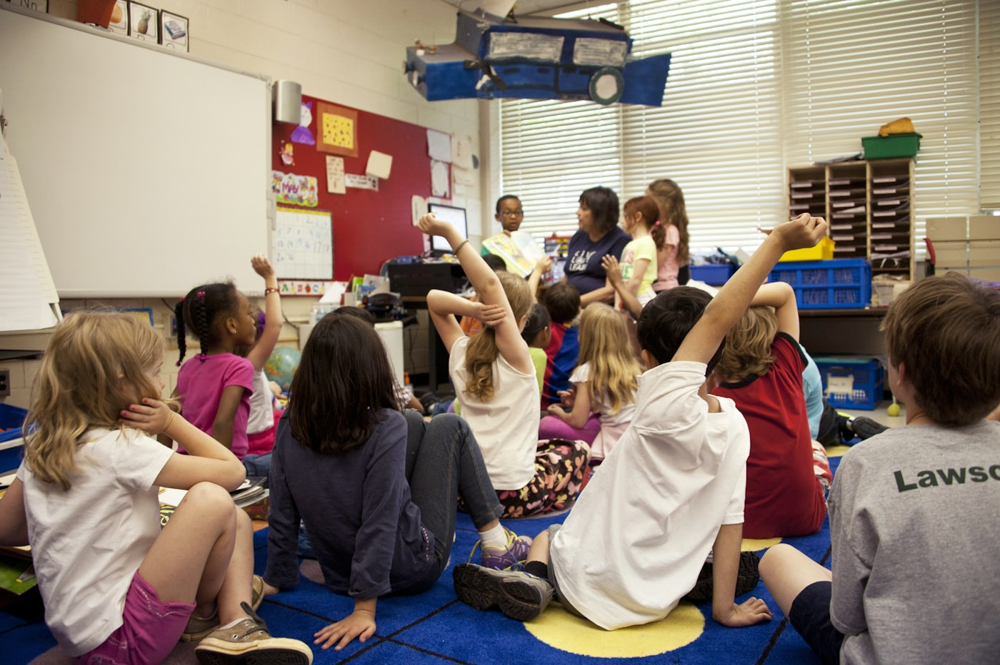

Perfil de la carrera
El Profesorado para la Educación Primaria forma maestros y maestras con dominio de los saberes escolares, capacidad de planificación y una práctica situada en las escuelas de la región.
Campo de desempeño
- Escuelas primarias de gestión estatal y privada.
- Apoyo escolar y proyectos de inclusión.
- Coordinación de propuestas educativas comunitarias.
Requisitos de ingreso
- Título secundario o constancia de título en trámite.
- DNI (fotocopia ambas caras).
- Certificado de salud completo.
- Dos fotos 4x4.